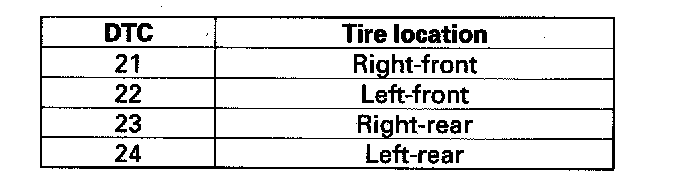

DTC 24
DTC 21, 22, 23, 24: Abnormally High Tire Sensor Temperature1. Make sure the tires have cooled down.
2. Turn the ignition switch ON (II).
3. Check the tire indicated by the DTCs you retrieved.
NOTE: An abnormal rise in the internal temperature of the tires can be caused by:
^ Excessive braking
^ Failure to release the parking brake (rear tires only)
^ Leaving the vehicle running while parked
^ Improper assembly of a wheel and tire

4. Turn the ignition switch ON (II).
Does the TPMS indicator go off within one minute?
YES - The system is OK at this time. Clear the DTC with the HDS.
NO - Go to step 5.
5. Read the internal temperature of the tire with the HDS.
NOTE: If the HDS screen shows not defined for sensor status, turn the ignition switch OFF, rotate the tire 1/4 turn, then turn the ignition switch ON (II) and try again. If not defined is still shown, repeat the procedure in the previous sentence until NORMAL is shown.
Is 176° F (80° C) or more indicated?
YES - Replace the appropriate tire pressure sensor.
NO - Check for loose terminals and poor connections at the TPMS control unit. If necessary, substitute a known-good TPMS control unit and recheck.